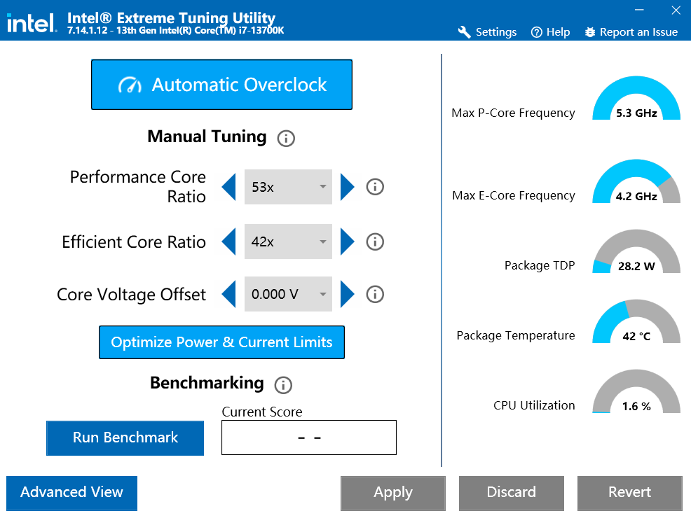
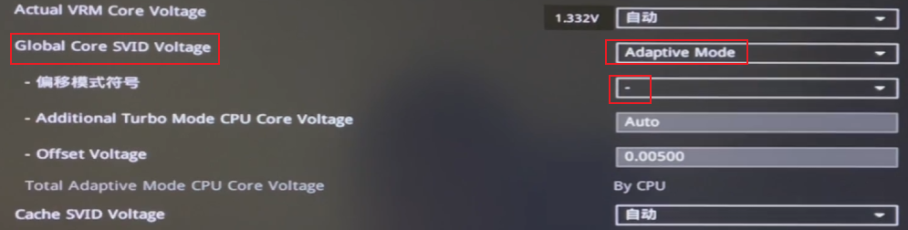
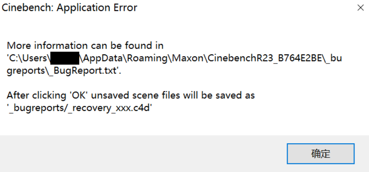

记录一次 Intel 13700K 降压的操作
问题
最近外网爆出了 Intel 13、14 代 i9 打游戏会报显存错误。这个也许只是 CPU 不稳定导致的短时运算错误，不足为惧[1]。但是，B站上有人讨论很多 14 代 i9 在待机模式下蓝屏，甚至 13700K 也出现了这种现象。如果消息准确，那么使用了半年的 14代 i9 就出现了“缩缸”现象（硬件损坏导致的永久性能损失）。理论上，CPU 的寿命至少是 10 年，而且大部分 CPU 都是不用了、而不是用坏了。我的 CPU 就是 13700K，这让我非常警惕。
对于这个问题的讨论有两点需要厘清：
- 软件报错，比如游戏、压测工具和渲染工具。这一点占据了极大比例的流量。目前，无论是 Intel 官方还是第三方网站、博主，给出的解决方案都是限制功耗和降频，使得软件不会报错。Intel 把锅甩给主板厂商，要求它们按照 Intel 标准来设置 BIOS。目前来看，这个所谓的 Intel 标准电压更高、频率更低，跑分更差。要注意，频率降低等于消费者吃亏。因此，Intel 和主板厂商都有责任。
- CPU“缩缸”，这是产品缺陷。这一点只占据很小比例的流量。显然，Intel 永远不会承认这一点。也许从 23 年 6 月 Intel 质保政策开始收紧时[2]，Intel 已经知道了这一事实。
我是在 23 年初配的电脑，轻度办公、写一写代码，基本没玩过 3A 大作。最近，我用 CPU-Z 和 R23 测试了性能，和网上的结果[3][4]差不多。因此，我的 13700K 应该没有“缩缸”。
话说回来，我倒不是很关心降频，我更关心 CPU 寿命。目前自动核心电压为 1.38 V，R23 跑一次就 100 度。这样的配置，迟早要“缩缸”。因此，本文主要记录我是如何给 CPU 降压的，以及在研究过程中发现的各种问题。
一些概念
- 降频：降低 CPU 的频率，比如 13700K 可以跑到 5.3GHz；
- 降压：降低 CPU 所需的电压；
频率需要由电压来保证。高频率需要在高电压下才能稳定，否则 CPU 就会产生错误；但这不意味着低电压就带不动原有的高频率。这也是降压的目的之一。另外，降压也能够避免 CPU 温度达到温度墙（而被强制降频），从而保证高负载下依旧维持高频率。此时 R23 跑分甚至可以更高。
XTU
降压方式
最方便的降压降频方法是用 Intel Extreme Tuning Utility，简称 XTU[5]。（这个工具实际上更多地用来超频）。
用这个工具调整设置后，如果系统蓝屏，则开机时会自动恢复默认配置，防止开不了机的情况。
同时，XTU 是个软件，点击就可以修改，不需要每次在 BIOS 里调整。

具体的降压方法[6]：
电压偏移每次降低 0.01V 或 0.005V，然后点击 Apply。每降低一次，都跑一次 R23，直到系统出现蓝屏。
在出现蓝屏的电压偏移再加上 0.01 V，然后跑 R23 30分钟，看看会不会蓝屏。
不会蓝屏的话，就将当前配置设置为开机自动启用：

Watchdog
Watchdog 机制是实现超频后 crash safe 的关键。没有这个机制，电脑无法在开机时会自动恢复默认配置。
不幸的是，XTU 提醒我这个功能没有开启：（Advanced | System information 中查看）

但是，在设备管理器中，Watchdog 是存在的（先点击 查看 | 显示隐藏设备，Watchdog 在系统设备中）：
经过一番研究，发现华硕 Z790 主板（无论什么具体型号[7]）用 Watchdog 保证 XMP 的稳定性。如果开启了 XMP，那么 XTU 就没法用 Watchdog 了[8]。
早知道不买华硕主板了，现在我得手动调 BIOS 了。
调整 BIOS
调整 BIOS 的方法看这两个视频[6:1][9]。问题在于，旧 BIOS 本来只有一个地方可以设置 CPU 电压 offset。现在新的华硕主板把它变成了多个配置，又把问题给搞复杂了。
先说结论：Global Core SVID Voltage 调整为 adaptive mode，然后设置 offset[10]：

这等价于 XTU 里面的 Core Voltage Offset[11]。
这几个电压的关系可以看这两篇帖子（别把自己给看晕了），不过和我们的操作关系不大：
降压过程
降压前
买回来就没升级过 BIOS：

在 CPU 降压前，我的 BIOS 只打开了 XMP 和 iGPU Multi-Monitor（使用独显时开启核显）。
降压前记得把开启自启动的软件都关掉，说不定系统崩溃时就把它们搞坏了。
降压时的工具：R23 和 HWMonitor。
HWMonitor 中需要关注主板 VCORE（CPU 实际电压）、CPU 温度和 CPU 功耗。
r23 跑一轮
测试极限 offset：
| offset | r23 跑分 | 最大功耗（W） | 最大电压 (V) | 最大温度（°C） |
|---|---|---|---|---|
| 0.0 | 30425 | 243 | 1.403 | 100 |
| -0.005 | 30488 | 240 | 1.350 | 100 |
| -0.01 | 30788 | 237 | 1.332 | 100 |
| -0.02 | 30713 | 232 | 1.332 | 98 |
| -0.03 | 30752 | 228 | 1.314 | 97 |
| -0.04 | 30668 | 224 | 1.296 | 96 |
| -0.05 | 30744 | 220 | 1.288 | 95 |
| -0.06 | 30416 | 218 | 1.279 | 96 |
| -0.07 | 30867 | 212 | 1.270 | 92 |
| -0.08 | 29622 | 207 | 1.261 | 91 |
| -0.09 | 30745 | 204 | 1.243 | 90 |
| -0.10 | 30442 | 202 | 1.234 | 88 |
| -0.11 | 30694 | 196 | 1.225 | 87 |
| -0.12 | 30739 | 193 | 1.217 | 87 |
| -0.13 | 报错 |
功耗是 package power
电压是 vcore
温度是 package temperature
当 offset 来到 -0.13 时，cinebench 报错，意味着需要回退 offset。
无论是 cinebench 报错，还是系统黑屏、蓝屏，都表明当前的 offset 不合格。
从表格中可以看出，随着电压减少，温度降低，r23 跑分反而更高了，因为不会再触发温度墙而导致降频。
r23 跑 30 分钟
测试满足稳定性条件时的 offset：
| offset | cinebench 何时报错 |
|---|---|
| -0.115 | 32 秒 |
| -0.11 | 15 秒 |
| -0.10 | 11 分 13 秒 |
| -0.09 | 18 分 |
| -0.08 | 6 分 |
| -0.07 | 成功 |
因此，-0.07 是最极限的 offset。30分钟结束后，r23 跑了 70 轮，得分 30337，最大温度为 97 °C，最大功耗为 217 W。
-0.07 距离单轮 r23 的极限值 -0.12 差了 0.05，看来这颗 13700K 的体质不咋地。
日常使用场景测试
| 使用场景 | 是否通过 |
|---|---|
| 浏览器看视频 | ✅ |
| 玩『猎人：荒野的召唤』 | ✅ |
| 同时打开多个 IDE 窗口 | ✅ |
| 同时打开 4 个虚拟机（先拍了个快照，防止崩溃） | ✅ |
| 在虚拟机里打开 bluestacks 模拟器玩手机游戏 | ✅ |
在后四种场景下，风扇声音明显比之前小，说明成功通过降压实现了降温，保护了 CPU 寿命。
我又跑了下 CPU-Z 的稳定性测试，发现此时只占用了 180 W，温度不到 90 °C。看来 CPU-Z 的程序并不像 r23 那样会吃满 CPU，不适合作为压测工具。
总结
在这次 CPU 降压的过程中，我研究了很多东西。很显然，Intel 和华硕都有错，不然我也不用折腾了 —— 以后还是买 AMD 的 CPU 吧。感觉降压降的不是 CPU 的电压，而是我的血压🤪。
参考
There are increased reports of crashing in Unreal Engine games, etc. and Epic is blaming Intel chips ↩︎
🔧 Undervolt Your INTEL CPU to increase FPS, Lower TEMPS & Use LESS POWER ✅ ↩︎ ↩︎
Asus Z790E Gaming WiFi II with Intel 14900K Watchdog Present False ↩︎
What’s the difference between actual VRM core voltage and global core SVID voltage? ↩︎